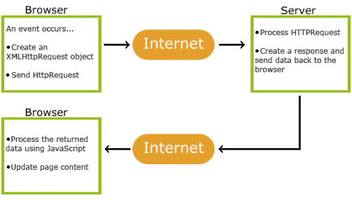

Kako AJAX funkcionira?
- 1. dogodi na web stranici (stranica učita, gumb klikne)
- 2. XMLHttpZahtjev predmet je stvorio JavaScript
- 3. XMLHttpZahtjev objekt šalje zahtjev na web server
- 4. Poslužitelj obrađuje zahtjev
- 5. poslužitelj šalje odgovor natrag na web-stranici
- 6. Odgovor čita JavaScript
- 7. Ispravno djelovanje (kao što je stranica update) obavlja JavaScript
Jedina bitna stvar u vezi AJAX-a je da se AJAX ne programira. Danas se koristi kroz već gotove JavaScript framework-e. Na primer – jQuery. Potrebno ti je samo 5 linija koda.
1) Prva linija: $(document).ready(function() { ... });
To je standardni izraz za jQuery unutar čijeg bloka se definiraju izrazi koji mogu da se izvrše tek nakon što je HTML DOM potpuno učitan i spreman za manipulaciju.
http://www.salebab.net/ajax-javascript-tehnologija-koju-moras-znati/
